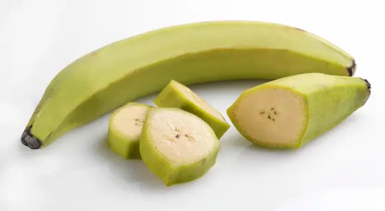
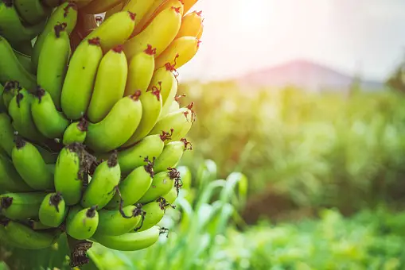
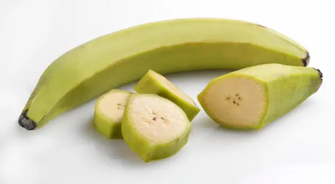
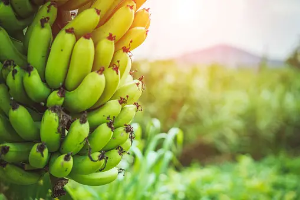

These are thasses of food
Carbonhydrate
Carbonhydrate: Carbohydrates are macronutrients and are one of the three main ways by which our body obtains its energy. They are called carbohydrates as they comprise carbon, hydrogen and oxygen at their chemical level. Carbohydrates are essential nutrients which include sugars, fibers and starches. Complex carbohydrates provide a high amount of energy to the body and slow down the digestion process of sugar molecules. Simple carbohydrates are found in more nutritious foods. Simple carbohydrates fasten the blood sugar level in the body Carbo means carbon plus hydrogen (H2O), which is water in the word carbohydrate. They are found in grains, vegetables, fruits and in milk and other dairy products. They are the basic food groups which play an important role in a healthy life.
- Bread
- Rice
- Fufu
- Garri
- Yam

Fat and Oil
Fats are mainly animal-derived and are composed of saturated fats. Oils are mainly plant-derived and are composed of unsaturated fats. Fats and oils are one of the three kinds of substances known as lipids. In addition to fats, lipids include the compounds known as phospholipids (FOS-fo-lip-ids), and those known as steroids. We will talk about phospholipids and steroids as we go along, but for now, we are focusing on fats Fats and oils are lipids and important energy stores in animals and plants Hibernating animals survive by using up their stores of body fat Fats are solid at room temperature, whereas oils are liquids.
- Pork
- Butter
- Vegetable Oil
- Fatty Meat
- Burger
Fibre
Fibre is an essential component of a healthy diet, and it is known to have numerous health benefits, including improving digestion, reducing the risk of heart disease, and promoting weight loss. It can also mean a type of food that helps digestion Fibre acts as a broom to sweep out the digestive tract and prevent constipation. Fibre is a type of carbohydrate that the body cannot digest. A high fibre diet may help to reduce the risk of heart disease, stroke, type 2 diabetes andcolorectal cancer
- Plantain
- Plantains are foods that are very high in natural Fibre
- Banana
- Banana are also very high in fibre which also aids food digestion
- Garden Eggs
- These fruits sometimes also called vegetables are highly with vitamins and macronutrients
- vegetables
- Are regarded as one of Mans favorite foods its parked with vitamins and fibre
 


